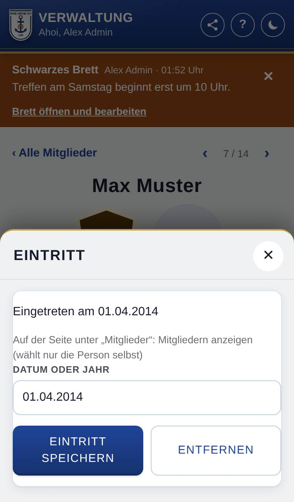

Seite eines Mitglieds
Auf der Seite eines Mitglieds steht alles, was du als Verwaltung über diese Person pflegst. Zum Ändern tippst du einfach auf die jeweilige Angabe; dann öffnet sich ein Fenster.
So öffnest du die Seite
Tippe unten auf Verwaltung, dann auf Mitglieder, und tippe in der Liste auf die Person.
Was du hier siehst
Du siehst nur, wofür du das Recht hast und was die Kompanie nutzt.
- ‹ Alle Mitglieder: zurück zur Liste, an dieselbe Stelle.
- ‹ und › oben rechts mit der Position (z. B. „3 / 25“): zum vorherigen bzw. nächsten Mitglied.
- Name und darunter das Abzeichen mit dem Dienstgrad. Wer Dienstgrade pflegt, tippt darauf, um zu befördern oder zu degradieren; ohne Dienstgrad steht dort ein Kreis mit „+“ und Kein Dienstgrad.
- Foto daneben: Ein Tipp zeigt es groß und ganz. Ohne Foto stehen dort die Anfangsbuchstaben.
- Rolle: die Rolle der Person (bei Zusatzrollen „Rollen: …“). Hat sie Ausnahmen bei den Rechten, steht „mit Ausnahmen bei den Rechten“ dabei.
- Kacheln Punkte und Offen: Stand der Punkte und offene Strafen. Ein Tipp öffnet die Einträge der Person.
- Kachel Titel: ihre Titel (oder „Keine“); ein Tipp öffnet die Auswahl.
- Geburtstag, Eintritt und Austritt: nur für alle, die Mitglieder anlegen dürfen. „Nicht eingetragen“ heißt: Es fehlt noch.
- Ämter: die Ämter der Person als Zeitstrahl, nur zum Ansehen.
- Konto und Rolle ganz unten: klappt beim Antippen auf (siehe Konto und Rolle).
So gehst du vor
Zum nächsten Mitglied blättern
- Wische auf der Seite nach links oder rechts. Die Seite folgt deinem Finger, daneben siehst du schon die nächste Person.
- Lass los: Die nächste Person gleitet herüber. Ziehst du nur ein kleines Stück, bleibt alles, wie es war.
- Am Computer tippst du stattdessen auf ‹ oder › oben rechts.
Das Foto ändern
Das dürfen alle, die Mitglieder anlegen dürfen.
- Tippe auf das Foto (oder auf die Anfangsbuchstaben).
- Tippe auf Foto ersetzen oder Foto entfernen; ohne Foto auf Foto hochladen.
- Wähle ein Foto aus. Es gilt sofort.
Den Eintritt eintragen
- Tippe auf Eintritt. Es öffnet sich das Fenster Eintritt.
- Trage bei Datum oder Jahr das Datum als TT.MM.JJJJ oder nur das Jahr ein.
- Tippe auf Eintritt speichern. Entfernen löscht ihn nach einer Rückfrage.

Ein Fenster schließen
Tippe auf ✕, neben das Fenster oder auf die Zurück-Taste des Geräts.
Gut zu wissen
- Du blätterst in der Reihenfolge, in der die Liste gerade sortiert und gefiltert ist. In einem offenen Fenster blättert Wischen nicht. Öffnest du die Seite nicht über die Liste (z. B. über einen Link), blätterst du in der ganzen Liste ohne Suche und Filter.
- Erlaubt sind Fotos als JPG, PNG oder WebP. Die App zeigt sie rund und schneidet sie dafür zu; am besten wirkt ein Porträt mit dem Kopf mittig im oberen Teil des Bildes. Bitte lade ein Foto nur mit dem Einverständnis der Person hoch.
- Nutzt die Kompanie die öffentliche Liste Mitglieder, sind die Fotos von Mitgliedn und Anwärtern dort für jeden sichtbar, auch ohne Anmeldung. Die Person selbst sieht ihr Foto unter Meins, ändert es aber nicht.
- Der Eintritt geht ab dem Jahr 1800 und nicht in der Zukunft. Ob er auf der Seite der Person unter Mitglieder steht, wählt nur sie selbst unter Meins → Konto; im Fenster siehst du ihre Wahl nur zur Information.
- Wie du Geburtstag und Austritt einträgst, steht im Handbuch unter Geburtstage pflegen und Ehemalige Mitglieder (für alle, die Mitglieder anlegen dürfen). Was die Kacheln für Punkte, Strafen, Dienstgrad und Titel öffnen, erklären die Handbuchseiten zu diesen Bereichen.